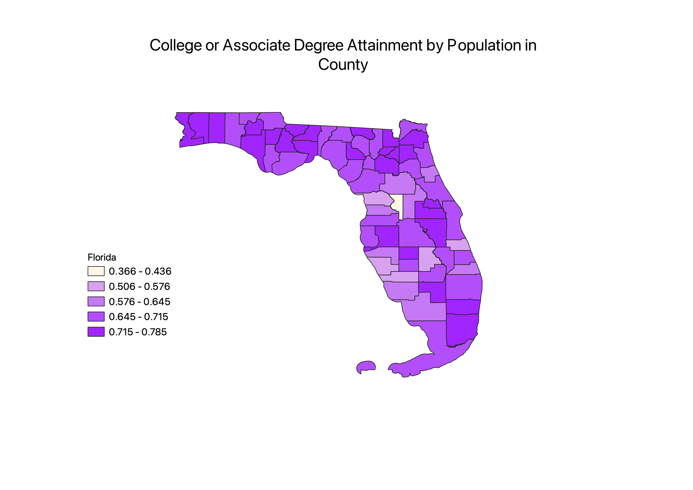
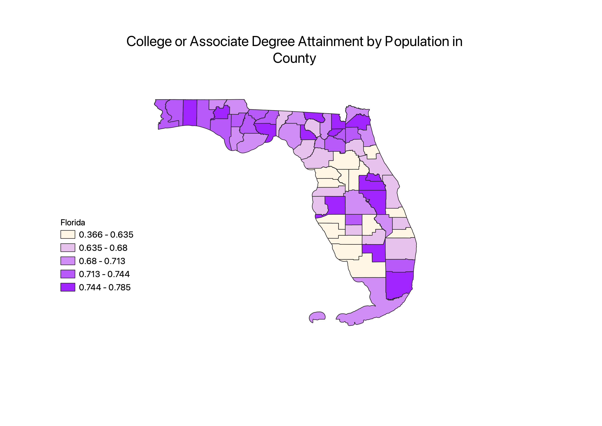
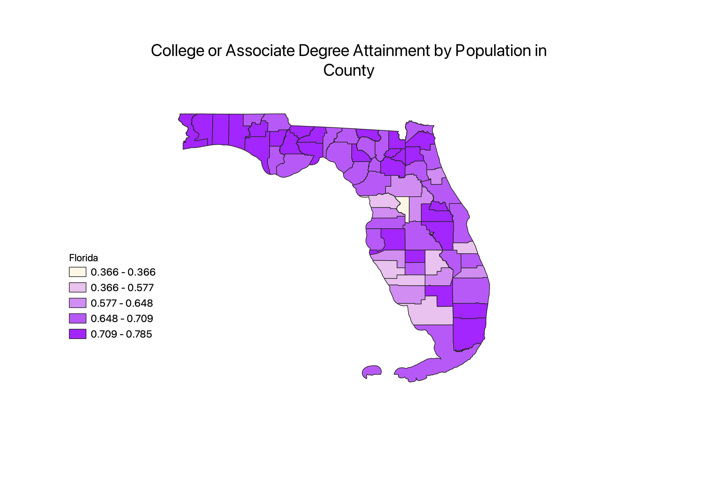

Equal Interval
A pro to Equal Interval mode is that every color has an equal interval meaning the colors do not skew the data. A con of this is that it is hard to distinguish between colors in the state of Florida.
Equal Quantile
A pro to Equal Quantile is that it is easy to distinguish between each county in the chloropleth. A con to this mode is that colors are not consistent with the ratio numbers.
Natural Breaks
A pro to Natural Breaks is that it organizes the ratio is a way that is easy to understand. A con to this method that it can be hard to distinguish between different areas in Florida.